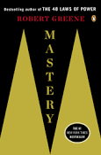

Background
"The 48 Laws of Power" is your guide to a Machiavelian life. It is the corporate guide to moving up the corporate ladder. It can also be helpful in many personal and/or professional situations. In the Book, the author, Robert Greene uses an array of short stories to validate the point of each chapter. He also includes the contradictory affects of each law.
Greene initially formulated some of the ideas in The 48 Laws of Power while working as a writer in Hollywood and concluding that today's power elite shared similar traits with powerful figures throughout history. In 1995, Greene worked as a writer at Fabrica, an art and media school, and met a book packager named Joost Elffers. Greene pitched a book about power to Elffers and six months later, Elffers requested that Greene write a treatment.
Although Greene was unhappy in his current job, he was comfortable and saw the time needed to write a proper book proposal as too risky. However, at the time Greene was rereading his favorite biography about Julius Caesar and took inspiration from Caesar's decision to cross the Rubicon River and fight Pompey, thus inciting the Great Roman Civil War. Greene would follow Caesar's example and write the treatment, which later became The 48 Laws of Power. He would note this as the turning point of his life.
Criticism
Professor Jeffrey Pfeffer said that Greene's so-called laws are based on isolated examples, and not on solid research. Kirkus Reviews said Greene offers no evidence to support his world view, Greene's laws contradict each other, and the book is "simply nonsense". Newsweek also points out ways the laws contradict each other and says "Intending the opposite, Greene has actually produced one of the best arguments since the New Testament for humility and obscurity." Director magazine notes "some of Greene's 'laws' seem contradictory" and the work is "plodding and didactic".

Robert Greene
Reception
The 48 Laws of Power has sold over 1.2 million copies in the United States and has been translated into 24 languages. Fast Company called the book a "mega cult classic," and The Los Angeles Times noted that The 48 Laws of Power turned Greene into a "cult hero with the hip-hop set, Hollywood elite and prison inmates alike." The book has been mentioned in various lights in publications like CNN, Forbes, The Los Angeles Times, Entrepreneur magazine, The New York Times, The New Yorker, Newsweek, USA Today, The Guardian, Business Insider, Fast Company, ESPN, and Men's Health.
The 48 Laws of Power has been reported to be much requested in American prison libraries, and is studied as a first year text in two US colleges. Former drug dealer Curtis Jackson (now better known as rapper 50 Cent) stated that he related to the book "immediately," and approached Greene with the prospect of a potential collaboration, which would later become The 50th Law, another New York Times bestseller. Busta Rhymes used The 48 Laws of Power to deal with problematic movie producers. DJ Premier has a tattoo inspired from Law #5, "Reputation is the cornerstone of power", on his arm and DJ Calvin Harris has an "Enter with boldness" arm tattoo based on Law #28. The 48 Laws of Power has also been mentioned in songs by UGK, Jay Z, Kanye West, and Drake. Dov Charney, founder and former CEO of American Apparel, frequently quoted the laws during board meetings, has given friends and employees copies of the book, and appointed Greene to the board of American Apparel. Former Cuban President Fidel Castro is also claimed by the book's author to have read the book.
- Never outshine the master
- Never put too much trust in friends, learn to use enemies
- Conceal your intentions
- Always say less than necessary
- So much depends on reputation - guard it with your life
- Court attention at all cost
- Get others to do the work for you, but always take credit
- Make other people come to you - us bait if necessary
- Win through your actions, never through argument
- Infection: Avoid the unhappy and the unlucky
- Learn to keep people dependent on you
- Use selective honesty and generosity to disarm your victim
- When asking for help, appeal to people's self-interest, never to their mercy
- Pose as a friend, work as a spy
- Crush your enemy totally
- Use absence to increase respect and honor
- Keep others in suspended terror: cultivate an air of unpredictability
- Do not build fortresses to protect yourself - isolation is dangerous
- Know who you're dealing with - do not offend the wrong person
- Do not commit to anyone
- Play a sucker to catch a sucker - seem dumber than your mark
- Use the surrender tactic: transform weakness into power
- Concentrate your forces
- Play the perfect courtier
- Re-create yourself
- Keep your hands clean
- Play on people's need to believe in a cultlike following
- Enter action with boldness
- Plan all the way to the end
- Make your accomplishments seem effortless
- Control the options: get others to play with the cards you deal
- Play to people's fantasies
- Discover each man's thumbscrew
- Be royal in your own fashion: act like a king to be treated like one
- Master the art of timing
- Disdain things you cannot have: ignoring them is the best revenge
- Create compelling spectacles
- Think as you like but behave like others
- Stir up waters to catch fish
- Despise the free lunch
- Avoid stepping into a great man's shoes
- Strike the shepherd and the sheep will scatter
- Work on the hears and minds of others
- Disarm and infuriate with the mirror effect
- Preach the need for change, but never reform too much at once
- Never appear too perfect
- Do not go past the mark you aimed for: in victory know when to stop
- Assume formlessness
The Laws
Words from the author
Other books by Robert Greene
|  |  |
|||||
|---|---|---|---|---|---|---|
| The Art of Seduction | The 33 Strategies of War | The 50th Law | Mastery | Dream Lover - Until Then | Lamius Filius | Talking to Myself |
{kind=link}
{kind=link}